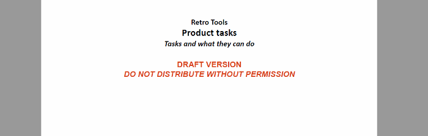

Cover (Title) Page
Customizing the cover page is one of the most requested customization requests.
Cover Page - XML Fragment
The merged
map file contains the <oxy:front-page> element, as a child of
the root element. This contains the metadata and an
<oxy:front-page-title> element with the title structure.
<bookmap xmlns:ditaarch="http://dita.oasis-open.org/architecture/2005/" ...> <oxy:front-page xmlns:oxy="http://www.oxygenxml.com/extensions/author"> <bookmeta xmlns:dita-ot="http://dita-ot.sourceforge.net/ns/201007/dita-ot" ... </bookmeta> <oxy:front-page-title> <booktitle xmlns:dita-ot="http://dita-ot.sourceforge.net/ns/201007/dita-ot" class="- topic/title bookmap/booktitle "> <booklibrary class="- topic/ph bookmap/booklibrary ">Retro Tools</booklibrary> <mainbooktitle class="- topic/ph bookmap/mainbooktitle ">Tasks</mainbooktitle> <booktitlealt class="- topic/ph bookmap/booktitlealt ">Product tasks</booktitlealt> </booktitle> </oxy:front-page-title> </oxy:front-page>
For the DITA Map PDF - based on HTML5 & CSS
transformation type, the merged map is further processed resulting in a collection
of HTML5 <div> elements. These elements preserve the
original DITA @class attribute values and add a new value derived
from the DITA element name.
<div class="- map/map bookmap/bookmap bookmap" ... > <div class=" front-page/front-page front-page"> <div class="- map/topicmeta bookmap/bookmeta boometa"> ... </div> <div class=" front-page/front-page-title front-page-title"> <div class="- topic/title bookmap/booktitle booktitle"> <div class="- topic/ph bookmap/booklibrary booklibrary">Retro Tools</div> <div class="- topic/ph bookmap/mainbooktitle mainbooktitle">Tasks</div> <div class="- topic/ph bookmap/booktitlealt booktitlealt">Product tasks</div> </div> ...
Cover Page - Built-in CSS rules
The element with the class frontpage/frontpage is associated with a page
named front-page with no headers or footers. The front page title is styled with a
bigger font. The built-in CSS rules are in
[PLUGIN_DIR]/css/print/p-front-page.css.
@media print { *[class~="front-page/front-page"] { page: front-page; } *[class~="front-page/front-page-title"] { display:block; text-align:center; margin-top:3in; font-size:2em; font-family:arial, helvetica, sans-serif; font-weight:bold; } @page front-page { @top-left-corner { content:none } @top-left { content:none } @top-center { content:none } @top-right { content:none } @top-right-corner { content:none } @bottom-left-corner { content:none } @bottom-left { content:none } @bottom-center { content:none } @bottom-right { content:none } @bottom-right-corner{ content:none } } }
How to Add a Background Image for the Cover
The simplest way is to create an SVG image as large as the entire physical page and set it as
the background for the front-page. This makes it very easy to accomplish a good
positioning of the graphical elements or artwork. In the foreground, you can place text
fragments using a series of :after pseudo-elements bound to the front page
title.
To set the size to an SVG image, you should specify the @width and
@height attributes on the <svg> root element using
specified unit values (in, cm, etc.) This should be enough only if all the coordinates from
your drawing have unit identifiers.
<polygon points="17.78 826.21 577.51 ....then make sure you also specify a
@viewBox attribute on the
<svg> root element that defines the abstract rectangle that contains
the drawing:<svg xmlns="http://www.w3.org/2000/svg" width="8.5in" height="11in" viewBox="0 0 600 850">
The following SVG document has the @width, @height, and
@viewBox attributes. The width and height have physical units (in inches),
while the view box and rectangle coordinates are unit-less.
<?xml version="1.0" encoding="UTF-8"?> <!DOCTYPE svg PUBLIC "-//W3C//DTD SVG 1.1//EN" "http://www.w3.org/Graphics/SVG/1.1/DTD/svg11.dtd"> <svg xmlns="http://www.w3.org/2000/svg" width="8.5in" height="11in" viewBox="0 0 110 110"> <desc>A gradient as big as a page.</desc> <defs> <linearGradient id="lc" x1="0%" y1="0%" x2="0%" y2="100%" spreadMethod="pad"> <stop offset="0%" stop-color="#00DD00" stop-opacity="1"/> <stop offset="100%" stop-color="#00AA00" stop-opacity="1"/> </linearGradient> </defs> <rect x="5" y="5" width="100" height="100" rx="10" ry="10" style="fill:url(#lc); stroke: #005000; stroke-width: 3;"/> <text x="33%" y="50%" color="#FFFFAA"> Sample </text> </svg>
This example shows a gradient. It is the size of a US-LETTER page and can be used in a publication using this page size.
In your customization CSS, add the following:
@page front-page { background-image: url("us-letter.svg"); background-position:center; }
For smaller artworks, you can use background-position with percentage values
to position and center the artwork (for example, a company logo):
@page front-page { background-image:url("company-logo.svg"); background-position:50% 5%; /* The first is the alignement on the X axis, the second on the Y axis.*/ background-repeat:no-repeat; }
How to Change Styling of the Cover Page Title
*[class ~= "front-page/front-page-title" { margin-top: 1in; font-size: 3em; }
How to Add Text to the Cover Page
If you need to add arbitrary text to the cover page, you can use the front page title element as an anchor and add as many blocks of text as you need after it, and style them differently.
In your customization CSS, add the following:
*[class ~= "front-page/front-page-title"]:after(1) { display:block; content: "DRAFT VERSION"; font-size: large; color: red; text-align:center; } *[class ~= "front-page/front-page-title"]:after(2) { display:block; content: "DO NOT DISTRIBUTE WITHOUT PERMISSION"; font-size: large; color: red; text-align:center; font-style: italic; }
The result is:

To use content from the document, you can use the oxy_xpath function in
the content property. For a more complex example, including the generation of
a new page for the synthetic :after elements, see: How to Show Metadata in the Cover Page.
How to Place Cover on the Right or Left Side
In your customization CSS, add the following CSS rules:
*[class ~= "front-page/front-page"]{
page-break-before:left;
}
For more information, see: Oxygen PDF Chemistry: Controlling Page Breaks.
How to Add a Specific Number of Empty Pages After the Cover Page
In your customization CSS, add the following CSS rules:
@page my-blank-page { /* Hide the page numbers */ @top-left {content: none}; @top-right {content: none}; } *[class ~= 'front-page/front-page']:after(1){ page:my-blank-page; display:block; content: '\2002'; color:transparent; page-break-after:always; } *[class ~= 'front-page/front-page']:after(2){ page:my-blank-page; display:block; content: '\2002'; page-break-after:always; } *[class ~= 'front-page/front-page']:after(3){ page:my-blank-page; display:block; content: '\2002'; page-break-after:always; }
\2002 character is a space that is not shown on the pages,
but gives a value for the content property.How to Add a Copyright Page after the Map Cover (Not for Bookmaps)
Regular DITA maps do not have the concept of a copyright notice. This is available only in the DITA bookmap structure.
If you are constrained to using a regular map and you need to add a copyright page between the front cover and the TOC, use the following technique:
In your customization CSS, declare a new page layout:
@page copyright-notice-page {
@top-left {
content:none; /* Clear the headers for the copyright page */
}
@top-right {
content:none;
}
}
The element with the class front-page/front-page element contains the title
of the publication and generates the cover page. A synthetic :after element
is created that follows this element and it is placed on a different page.
*[class~="front-page/front-page"]:after{ display:block; page: copyright-notice-page; /* Moves the synthetic element on a new page. */ margin-top:90%; /* use margins to position the text in the page */ margin-left: 5em; margin-right: 5em; content: "Copyright 2018-2019 MyCorp Inc. \A All rights reserved"; text-align:center; /* More styling */ color:blue; }
If you need to add more content as blocks, use the :after(2),
:after(3) pseudo-elements:
*[class~="front-page/front-page"]:after(2){ display:block; page: copyright-notice-page; /* Continue on the same page as the first ':after'. */ content: "Some more styled text"; color:red; }
If you want to extract information from the document, use the oxy_xpath()
function. For example, if the copyright info is stored in the map like this:
<map ...>
<topicmeta>
<copyright>
<copyryear year="2018"/>
<copyrholder>MyCorp Inc.</copyrholder>
</copyright>
</topicmeta>
...
then use this:
*[class ~= "front-page/front-page"]:after(3) { display: block; page: copyright-notice-page; content: "Year: " oxy_xpath('//*[contains(@class, " front-page/front-page ")]/*[contains(@class, " map/topicmeta ")]/*[contains(@class, " topic/copyright ")]/*[contains(@class, " topic/copyryear ")]/@year') "\A Holder: " oxy_xpath('//*[contains(@class, " front-page/front-page ")]/*[contains(@class, " map/topicmeta ")]/*[contains(@class, " topic/copyright ")]/*[contains(@class, " topic/copyrholder ")]/text()'); color: green; }
How to Remove the Cover Page and TOC
If you need to hide or remove the cover page, the table of contents or other structures, match the elements with a "front-page/front-page" and "toc/toc" classes in your customization CSS:
*[class ~= 'map/map'] > *[class ~= 'toc/toc'] { display:none !important; } *[class ~= 'map/map'] > *[class ~= 'front-page/front-page']{ display:none !important; } *[class~='topic/topic'][is-chapter] { -oxy-page-group : auto; }